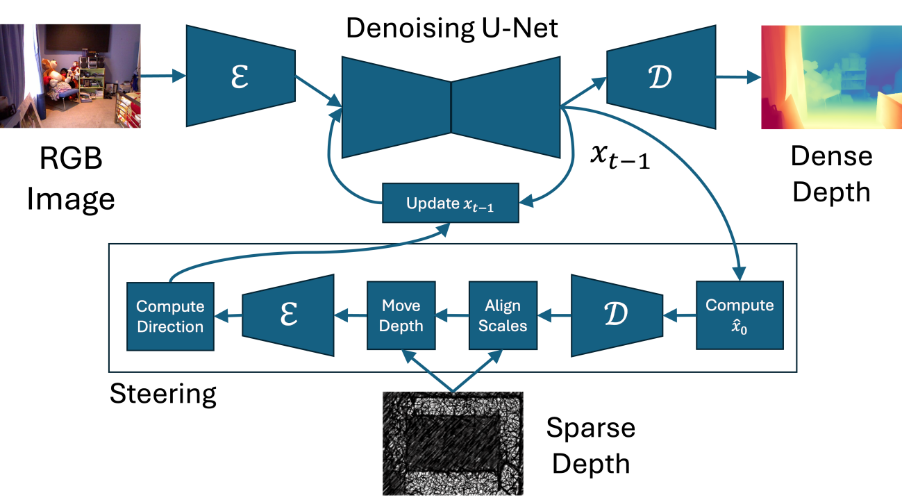

Even if the depth maps captured by RGB-D sensors deployed in real environments are often characterized by large areas missing valid depth measurements, the vast majority of depth completion methods still assumes depth values covering all areas of the scene. To address this limitation, we introduce SteeredMarigold, a training-free, zero-shot depth completion method capable of producing metric dense depth, even for largely incomplete depth maps. SteeredMarigold achieves this by using the available sparse depth points as conditions to steer a denoising diffusion probabilistic model. Our method outperforms relevant top-performing methods on the NYUv2 dataset, in tests where no depth was provided for a large area, achieving state-of-art performance and exhibiting remarkable robustness against depth map incompleteness. Our code will be publicly available.
The method runs Marigold, the diffusion-based monocular depth estimator, in 50 DDPM iterations. The noisy sample is updated between the iterations moving the final prediction close to the provided sparse depth condition. After each time step $t$, we estimate a clean data sample $\tilde{x}_0$ and, together with the condition, we use it to compute the direction in which we update the noisy sample $x_{t-1}$. It is not possible to interpret $\tilde{x}_0$ in the latent space, thus it must be decoded by the decoder $\mathcal{D}$. Consequently, we align scales of the depth condition and decoded $\tilde{x}_0$ and move the depth estimate closer to the provided condition. Moving the depth utilizes linear interpolation of points sampled from the depth estimate as well as the condition. The moved depth estimate is then encoded by $\mathcal{E}$ back to the latent space. We determine the update direction of $x_{t-1}$ as a difference between the moved depth estimate and $x_{t-1}$ scaled by a time $t$ dependent factor. Lastly, to retrieve the metric depth, we rescale and shift the final depth prediction by minimizing the square error with respect to the sparse depth condition. Note, that the image below depicts $\mathcal{E}$, $\mathcal{D}$ twice but one instance of each is run in reality.
We visualize progression of depth estimation in 50 diffusion steps for two samples, one from NYUv2 and one from KITTI dataset. The first rows in the figures display an RGB image and sparse depth condition. In the second row on the left there is $\tilde{x}_0$ after modification by the steering condition, which gives us the steering direction. It can be observed, that the shape of the steering condition is very apparent initially and progressively fades away with each diffusion step. This means that the difference between $\tilde{x}_0$ and the steering condition decreases (the visualization does not take the steering factor into consideration). On the right side we can observe how $\tilde{x}_0$ evolves over the diffusion steps and becomes the final depth estimate.
Use the sliders below the figures to move between the diffusion steps ($t$ descreasing from left to right).
You are looking at RGB image (top left), sparse depth condition (top right), $\tilde{x}_0$ steered by the sparse condition (bottom left), $\tilde{x}_0$ (bottom right). Move the slider to see how the bottom row changes over the 50 diffusion steps.
You are looking at RGB image (top left), sparse depth condition (top right), $\tilde{x}_0$ steered by the sparse condition (bottom left), $\tilde{x}_0$ (bottom right). Move the slider to see how the bottom row changes over the 50 diffusion steps.
Marigold is a diffusion based method for depth estimantion that inspired our work.
Marigold-DC depth completion method based on Marigold characteristic by its ability to guide the diffusion utilizing depth conditions with wide ranges of sparsity.
Horizon Europe project RoBétArmé funding and supporting this work.
Check out other work from our lab Rumex Weeds, ConRebSeg, Awesome DyNNs and our GitHub.
@INPROCEEDINGS{steered-marigold,
author={Gregorek, Jakub and Nalpantidis, Lazaros},
booktitle={2025 IEEE International Conference on Robotics and Automation (ICRA)},
title={SteeredMarigold: Steering Diffusion Towards Depth Completion of Largely Incomplete Depth Maps},
year={2025},
pages={13304-13311},
doi={10.1109/ICRA55743.2025.11128449}
}